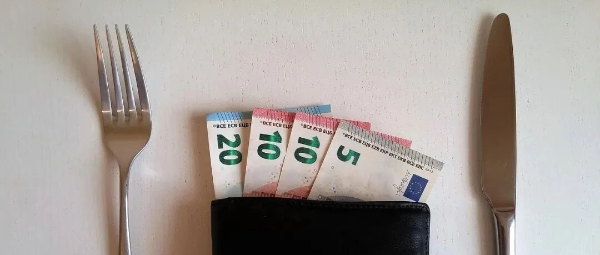

如何缩短财务自由的时间。
点击关注 秋秋在分享
一起实现财务自由退休
大家好，我是秋秋呀！
今天又是一期干货，手把手教你缩短财务自由的时间。
我是25岁存下了100万，以此为例分享「大学刚毕业到财务自由」的关键步骤，大概能用5年时间完成。
先行动试试～我绝对不是"站着说话不腰疼"。
1、把第一份工资的50%存下来
FIRE（财务自由、提前退休）就看两点，你赚的钱和你花的钱。
赚的多，花的少，容易FIRE。
赚的少，花的少，也能成。
赚的多，花的多，就不一定了。
它的本质，是看你存下的钱能不能覆盖你25倍年生活开销。
我算了，如果从第一份工作开始，就把收入的50%以上存下来，15年就可以财务自由。
我第一年工作工资10万多，花不到5万，存下的钱能当未来1～2年的生活费。
FIRE存够25倍年花销，当时的我大概15年完成目标。
差不多35岁财务自由，也不错呢。
你要做的关键步骤：
（1）立刻储蓄
先建立一个独立账户，工资到手后，立刻转50%到独立账户。
我是用支付宝冻结资金，当然也可以做我写过的基金定投。
（2）消费降级
我不鼓励苦行僧式的生活，只是有些事，喝奶茶、买纸质书、打车，你觉得影响不大的可以降级。
▪可砍项目 | ▪替代方案 | ▪月省金额 |
▪15元奶茶×10次 | ▪牛奶或冷泡菜 | ▪100 |
▪打车通勤×10次 | ▪地铁+共享单车 | ▪300 |
▪买书买杂物 | ▪电子书或DIY | ▪200 |
▪外卖午餐×20次 | ▪自带便当 | ▪400 |
▪合计 | ▪1000 |
你能存下50%以上收入，财务自由完成进度为15年。
完成时间节点为35岁前后。

2、多赚钱，进而存下收入80%
如果你赚的少，想要咋存更多钱上下功夫，挺难。
像我月薪1万，北京租房+吃饭怎么也要3000，我是存不下80%的。
但是收入5万时，每个月花1万了，我还能存下80%。
你要做的关键步骤：
（1）主业突击
我一共只上过两年班，工资就完成翻倍计划。
我的思路是：
第一步：先瞄准行业头部公司，高利润领域或者高薪城市。
这三个选择决定你的收入上限。
我大学学的心理学，并不很喜欢，就想做新媒体，锁定北京去投了简历。
果然收入无限～
第二步：制定“核心技能清单”。
你可以付费咨询业内顶尖人群或者考取证书，自学也行。
我是凭借着大学写的东西成功入行，后面自学的剪辑拍摄，距离目标更近了。
第三步：持续量化结果，完成跳槽涨薪计划。
后来我开始运营百万粉的大号，为公司创造百万价值。
这样，我就从
月薪7k → 次年15k（跳槽+专业认证）
→ 当时目标3年月薪25k。
其实，和我一起工作的小伙伴现在年薪都40万左右（毕业6年）。
如果你真的想赚钱，城市、行业、技能，缺一不可。

（2）副业启动
不巧，你就是主业天花板太低，在三四线城市，收入过万就顶天了。
也不好转行的情况下，就要试试副业。
(这里，我还是建议选择好城市、好行业，比开展副业更重要，除非没办法)
优先是结合主业资源。
比如FA人士做投资科普课，设计师接LOGO定制，在稳定变现后再采用“时间可复制”模式。
做课程、软件、版权作品，就是能持续为你赚钱的。
我毕业第一年是月入10K，假设毕业五年能到30K，我的副业是第一年就月入50K。
副业的天花板很难看到的。
从我24岁裸辞到26岁FIRE提前退休，后面能把收入的90%都存下来。
当你能存下80%以上收入以后，财务自由完成进度为3～5年。
完成时间节点为28岁前后。

3、钱生钱，不用再赚一分钱
存钱和理财这件事，没有先后。
学习投资也是，不是等有钱了，再开始学。
在第一步存钱里，你就可以按照433比例投入。
40%的稳定账户：比如大额存单、债券基金等风险小的。
30%的股票账户：像纳斯达克指数基金或者股票风险大的。
30%的灵活账户：用于生活开销，或者存入货币基金。
当你积累足够多的本金后，鹅生金蛋，你只需要拿出金蛋（收益）生活，你的鹅会持续为你赚钱的。

✨
以上，是一个「存钱+赚钱+生钱」三步走的方法。
相信我，从大学毕业就开始执行，财务自由的时间能从25年缩短到5年。
还有一个建议。在财务自由之前先别急着买房买车生孩子…..拒绝借钱和网贷陷阱，不要冲动创业。
如果这些你做了，会延长财务自由时间。
我的心得是从大学毕业开始，一鼓作气用5～10年完成以上计划。
之后就享受人生吧！